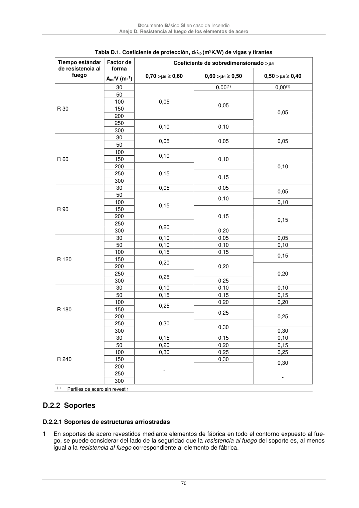

DB-SI Seguridad en caso de incendio · edición 2025-03-04 · capa oficial
Documento DB-SI-oficial · SHA-256 del PDF 0a2e78cd62471d9cc5cfe2efbc6aa39fdbad73c124aea7b039f9de96c141e105
Copia fiel del PDF fuente · Fuente oficial
Ficha de la disposición en la fuente oficial
Formatos: JSON del segmento · Markdown
Documento Básico SI en caso de Incendio Anejo D. Resistencia al fuego de los elementos de acero 70 Tabla D.1. Coeficiente de protección, d/p(m2K/W) de vigas y tirantes Tiempo estándar de resistencia al fuego Factor de forma Am/V (m-1) Coeficiente de sobredimensionado >fi 0,70 >fi 0,60 0,60 >fi 0,50 0,50 >fi 0,40 R 30 30 0,05 0,00(1) 0,00(1) 50 0,05 0,05 100 150 200 250 0,10 0,10 300 R 60 30 0,05 0,05 0,05 50 100 0,10 0,10 0,10 150 200 0,15 250 0,15 300 R 90 30 0,05 0,05 0,05 50 0,15 0,10 100 0,10 150 0,15 0,15 200 250 0,20 300 0,20 R 120 30 0,10 0,05 0,05 50 0,10 0,10 0,10 100 0,15 0,15 0,15 150 0,20 0,20 200 0,20 250 0,25 300 0,25 R 180 30 0,10 0,10 0,10 50 0,15 0,15 0,15 100 0,25 0,20 0,20 150 0,25 0,25 200 0,30 250 0,30 300 0,30 R 240 30 0,15 0,15 0,10 50 0,20 0,20 0,15 100 0,30 0,25 0,25 150 - 0,30 0,30 200 - 250 - 300 (1) Perfiles de acero sin revestir
